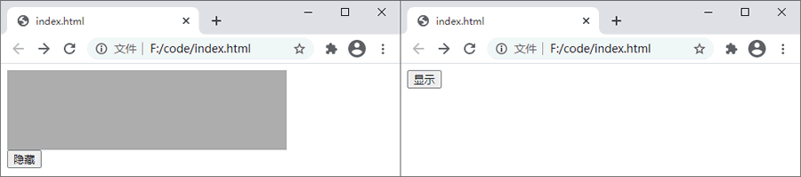
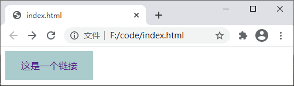
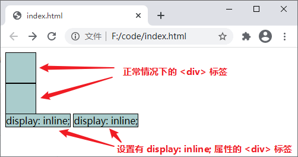
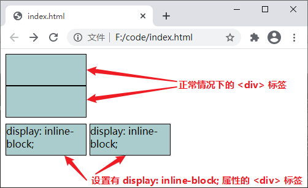

CSS display（元素显示类型）
display 属性是 CSS 中最重要的属性之一，主要用来控制元素的布局，通过 display 属性您可以设置元素是否显示以及如何显示。
根据元素类型的不同，每个元素都有一个默认的 display 属性值，例如
根据元素类型的不同，每个元素都有一个默认的 display 属性值，例如
<div>默认的 display 属性值为 block（块级元素），而<span>默认的 display 属性值为 inline（行内元素），您也可以手动将元素的 display 属性转换为其它值。display 属性的可选值如下：| 值 | 描述 |
|---|---|
| none | 隐藏元素 |
| block | 将元素设置为块级元素 |
| inline | 将元素设置为内联元素 |
| list-item | 将元素设置为列表项目 |
| inline-block | 将元素设置为行内块元素 |
| table |
将元素设置为块元素级的表格（类似<table>） |
| inline-table |
将元素设置为内联元素级的表格（类似<table>） |
| table-caption |
将元素设置为表格的标题（类似<caption>） |
| table-cell |
将元素设置为表格的单元格（类似<td>和<th>） |
| table-row |
将元素设置为表格的行（类似<tr>） |
| table-row-group |
将元素设置为表格的内容部分（类似 <tbody>） |
| table-column |
将元素设置为表格的列（类似<col>） |
| table-column-group |
将元素设置为表格中一个或多个列的分组（类似<colgroup>） |
| table-header-group |
将元素设置为表格的头部（类似<thead>） |
| table-footer-group |
将元素设置为表格的脚（类似<tfoot>） |
| box | CSS3 中新增的属性值，表示将对象设置为弹性伸缩盒（伸缩盒的最老版本） |
| inline-box | CSS3 中新增的属性值，表示将对象设置为内联元素级的弹性伸缩盒（伸缩盒的最老版本） |
| flexbox | CSS3 中新增的属性值，表示将对象设置为弹性伸缩盒（伸缩盒的过渡版本） |
| inline-flexbox | CSS3 中新增的属性值，表示将对象设置为内联元素级的弹性伸缩盒（伸缩盒的过渡版本） |
| flex | CSS3 中新增的属性值，表示将对象设置为弹性伸缩盒（伸缩盒的最新版本） |
| inline-flex | CSS3 中新增的属性值，表示将对象设置为内联元素级的弹性伸缩盒（伸缩盒的最新版本） |
| run-in | 根据上下文来决定将元素设置为块级元素或内联元素 |
| inherit | 从父元素继承 display 属性的值 |
伸缩盒子（弹性盒子）是 CSS3 中一种新的布局模式，引入伸缩盒子的目的是提供一种更加有效的方式来对页面中的元素进行排列、对齐和分配空间，当页面需要适应不同的屏幕大小以及设备类型时这种布局方式能够确保元素拥有恰当尺寸和位置。
下面通过几个常用的属性值来介绍以下 display 属性的使用：display: none
display 的属性值 none 可以用来隐藏元素，与前面我们介绍《CSS visibility》时提到的 visibility: hidden; 功能相似，不同的是 display: none; 在隐藏元素的同时，它还会将元素所占的位置一并隐藏。display: none; 通常会与 JavaScript 结合使用来隐藏或显示某个元素，下面通过一个示例来演示一下：
<!DOCTYPE html>
<html>
<head>
<style>
div {
width: 350px;
height: 100px;
background-color: #AAA;
}
</style>
</head>
<body>
<div id="box"> </div>
<button onclick="change_box(this)">隐藏</button>
<script>
function change_box(obj){
var box = document.getElementById('box');
if(box.style.display == 'none'){
box.style.display = "";
obj.innerHTML = "隐藏";
}else{
box.style.display = "none";
obj.innerHTML = "显示";
}
}
</script>
</body>
</html>
运行上面的代码，在页面中点击“显示”或“隐藏”按钮即可对页面中指定的元素执行显示或隐藏操作，如下图所示：

图：display: none; 属性演示
图：display: none; 属性演示
display: block
display 属性的属性值 block 可以将元素强制转换为块级元素，示例代码如下：
<!DOCTYPE html>
<html>
<head>
<style>
a{
display: block;
width: 150px;
height: 50px;
background-color: #ACC;
line-height: 50px;
text-align: center;
text-decoration: none;
}
</style>
</head>
<body>
<a href="">这是一个链接</a>
</body>
</html>
运行结果如下图所示：

图：display: block; 属性演示
图：display: block; 属性演示
display: inline
display 属性的属性值 inline 可以将元素强制转换为行内元素，让元素拥有行内元素的特性，例如可以与其他行内元素共享一行等，示例代码如下：
<!DOCTYPE html>
<html>
<head>
<style>
div {
width: 50px;
height: 50px;
background-color: #ACC;
border: 1px solid black;
}
.inline {
display: inline;
}
</style>
</head>
<body>
<div></div>
<div></div>
<div class="inline">display: inline;</div>
<div class="inline">display: inline;</div>
</body>
</html>
运行结果如下图所示：

图：display: inline; 属性演示
图：display: inline; 属性演示
display: inline-block
display 属性的属性值 inline-block 可以将元素强制转换为行内块元素，inline-block 既具有 block 能够设置宽高的特性又具有 inline 不独占一行的特性，示例代码如下：
<!DOCTYPE html>
<html>
<head>
<style>
div {
width: 130px;
height: 50px;
background-color: #ACC;
border: 1px solid black;
}
.inline-block {
display: inline-block;
text-align: center;
margin-top: 10px;
}
</style>
</head>
<body>
<div></div>
<div></div>
<div class="inline-block">display: inline-block;</div>
<div class="inline-block">display: inline-block;</div>
</body>
</html>
运行结果如下图所示：

图：display: inline-block; 属性演示
图：display: inline-block; 属性演示
关注公众号「站长严长生」，在手机上阅读所有教程，随时随地都能学习。内含一款搜索神器，免费下载全网书籍和视频。

微信扫码关注公众号